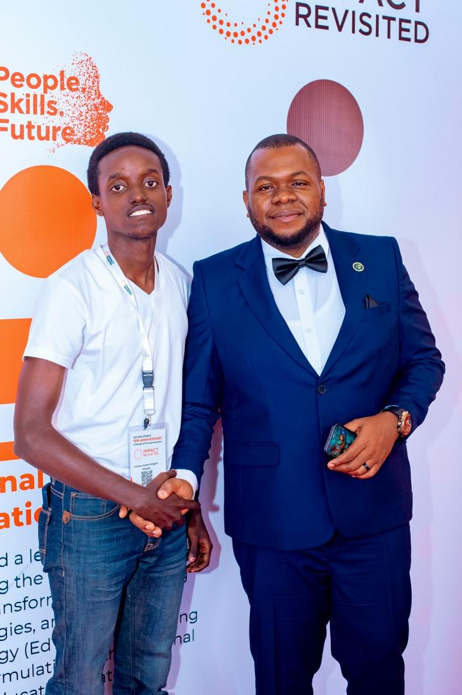

I am a passionate Tech enthusiast with a strong foundation in computer science and a keen interest in solving complex technical challenges.
I'm where the money is.. Most lie about what got them into Tech but if i'm to level with you right now, i'm in it for the money.
Delusional about Forbes 30 under 30!!
| Educational Level | School | Years |
|---|---|---|
| BSc in Computer Science | University Of Dar es Salaam | 2025-Present |
| Advanced Secondary Education | Pamoja High School | 2023-2025 |
| Ordinary Secondary Education | St.Maximilian Sec. Secondary School | 2019-2022 |
| Primary School Education | Michael Mausa School | 2011-2018 |
No wahalla
|
 |
This is scripted but the essence to it is exceptional, take my word for it.
Back to top